1.1 Modelos de arquitectura de computo
Modelos de arquitectura de computo La arquitectura de computadoras es el diseño y la organización de un sistema para un equipo de cómputo.Es un modelo y descripción de cada función, así como los requerimientos y las implementaciones de diseño para varias partes del equipo de cómputo.
1.1.1 Clasicas
Estas arquitecturas se desarrollan en las primeras computadoras electromecánicas y de tubos de vacío. Hay dos arquitecturas distintas relacionadas con el uso y distribución de la memoria: Arquitectura de Jonh Von Neumman y Arquitectura Harvard.
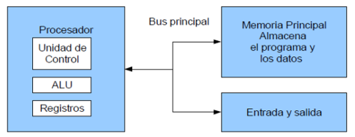
Arquitectura Von Neumann
La unidad central de proceso (CPU), está conectada a una memoria principal única (casi siempre sólo
RAM)
donde se guardan las instrucciones del programa y los datos. A dicha memoria se accede a través de
un sistema interconexión
de buses único (control, direcciones y datos). En un sistema con arquitectura Von Neumann el tamaño
de la unidad de datos o
instrucciones está fijado por el ancho del bus que comunica la memoria con la CPU.
El tener un único bus hace que el microprocesador sea más lento en su respuesta,
ya que no puede buscar en memoria una nueva instrucción mientras no finalicen las transferencias de
datos de la instrucción anterior.
Componentes principales de Von Neumann:
- Unidad de Memoria
- Unidad de Entrada/Salida
- Unidad de control
- Incluidos CPU
- Unidad Aritmética Lógica.
- Incluida en CPU.
- Registros de Programas
- Incluidos en CPU.
Las instrucciones provenientes del sistema de entrada son almacenadas por la
memoria,
procesados por la ALU bajo la dirección de la unidad de control. Los resultados obtenidos son
enviados a
la unidad de salida.
En las computadoras de programa almacenado, el programa puede manipularse como si se tratara de
datos.
Este concepto da origen a los compiladores, sistemas operativos y es la base de la gran versatilidad
de
las computadoras modernas.
del modelo Von Neumann: La longitud de las instrucciones por el bus de datos,
que hace que el microprocesador tenga que realizar varios accesos a memoria para buscar
instrucciones
complejas.
Modelo Harvard
Esta arquitectura utiliza los Microcontroladores, tiene la unidad central de proceso (CPU) conectada
a
dos memorias (una con las instrucciones y otra con los datos) por medio de dos buses diferentes. Una
de
las memorias contiene solamente las instrucciones del programa (Memoria de Programa), y la otra sólo
almacena datos (Memoria de Datos). Ambos buses son totalmente independientes lo que permite que la
CPU
pueda acceder de forma independiente y simultánea a la memoria de datos y a
1.1.2 Segmentadas
Modelos de arquitectura de computo Es una de las tecnologías utilizadas para realizar la segmentación o paralelismo. Divide el procesador, en etapas, procesa una instrucción diferente en cada una y trabaja con varias a la vez. Pueden trabajar de forma paralela, en diferentes instrucciones, utilizando una cola de instrucciones para su comunicación, denominado entubamiento. La técnica de implementación clave utilizada para hacer CPU. La dependencia de datos y de control, que tiene como efecto la disminución del rendimiento del pipelining. La segmentación de cauce (pipelining) es una forma efectiva de organizar el hardware del CPU para realizar más de una operación al mismo tiempo. Consiste en descomponer el proceso de ejecución de las instrucciones en fases o etapas que permitan una ejecución simultánea. Las etapas están conectadas, cada una a la siguiente, para formar una especie de cauce las instrucciones se entran por un extremo, son procesadas a través de las etapas y salen por el otro. La productividad de la segmentación está determinada por la frecuencia con que una instrucción salga del cauce.
1.1.3 Multiprocesamiento
Modelos de arquitectura de computo Se denomina multiprocesador a un computador que cuenta con dos o más microprocesadores (CPUs). La arquitectura NUMA, donde cada procesador tiene acceso y control exclusivo a una parte de la memoria. La arquitectura SMP, donde todos los procesadores comparten toda la memoria. Para que un multiprocesador opere correctamente necesita un sistema operativo especialmente diseñado para ello. La arquitectura NUMA, donde cada procesador tiene acceso y control exclusivo a una parte de la memoria. La arquitectura SMP, donde todos los procesadores comparten toda la memoria. Los CPU de multiprocesamiento según Flynn se clasifican de la siguiente manera:
- SISO : (Single Instruction, Single Operand) computadoras. Monoprocesador
- SIMO : (Single Instruction, Multiple Operand) procesadores vectoriales, Exenciones MMX
- MISO : (Multiple Instruction, Single Operand) No implementado
- MIMO : (Multiple Instruction, Multiple Operand) sistemas SMP, Clusters, GPUs

Los procesadores vectoriales, son computadoras pensadas para aplicar un mismo
algoritmo numérico a
una serie de datos matriciales, en especial en la simulación de sistemas físicos complejos, tales
como simuladores de clima, explosiones atómicas, reacciones químicas, etc. Donde los datos son
representados como grandes números de datos en forma matricial sobre los que se deben se aplicar el
mismo algoritmo numérico. Los Procesadores Digitales de Señales (DSP), son procesadores
especializados en el procesamiento de señales tales como audio, vídeo, radar, sonar, radio, etc.
Cuentan con instrucciones tipo vectorial que los hace muy aptos para dicha aplicación.
SMP
En los sistemas SMP (Simetric Multiprocessing), varios procesadores comparten la misma memoria
principal y periféricos de Entrada /Salida, normalmente conectados por un bus común. Se conocen como
simétricos, ya que ningún procesador toma el papel de maestro y los demás de esclavos, sino que
todos tienen derechos similares en cuanto al acceso a la memoria y periféricos y ambos son
administrados por el sistema operativo. Pueden formarse con varios núcleos en un solo circuito
integrado o con varios circuitos integrados en una misma tarjeta madre. La primera opción ha sido
popularizada al hacerse más económicos los procesadores multinúcleo de los principales fabricantes y
con su uso en sistemas de gama media y baja, e inclusive en teléfonos celulares y tabletas. La
segunda opción fue la que se uso en un principio y sigue siendo usada en en estaciones de trabajo y
en servidores de alto rendimiento debido a que incrementa el poder computacional del sistema, pero
también incrementa considerablemente el costo del sistema.
Clusters
Conjuntos de computadoras independientes conectadas en una red de área local o por un bus de
interconexión y que trabajan cooperativamente. Con un sistema de procesamiento paralelo o
distribuido. Es clave en su funcionamiento contar con un sistema operativo y programas de aplicación
capaces de distribuir el trabajo entre las computadoras de la red. Se debe tener cuidado al
implementar la aplicación, ya que si los datos que hay que pasar de un procesador a otro son
demasiados, el tiempo empleado en pasar información de un nodo a otro puede sobrepasar a la ganancia
que se tiene al dividir el trabajo entre varios procesadores.
1.2 Análisis de los componentes
Los programas cada vez más grandes y complejos demandan mayor velocidad en el procesamiento de información, lo que implica la elección de microprocesadores más rápidos y eficientes.
1.2.1 Arquitecturas
Arquitecturas Cisc
En la arquitectura computacional, CISC es un modelo de arquitectura, en donde
los microprocesadores tienen un conjunto instrucciones que caracterizan por ser muy amplio y
permitir operaciones complejas entre operandos, situados en la memoria o en los registros internos.
Este tipo de arquitectura dificulta el paralelismo entre instrucciones, por lo que, en la
actualidad, la mayoría de los sistemas CISC de alto rendimiento implementan un sistema que convierte
dichas instrucciones complejas en varias instrucciones simples del tipo RISC, llamadas generalmente
microinstrucciones. Dato importante: Los CISC pertenecen a la primera corriente de construcción de
procesadores, antes del desarrollo de los RISC. Ademas Para realizar una sola instrucción un chip
CISC requiere de cuatro a diez ciclos de reloj. Entre las ventajas de CISC destacan las siguientes:
Reduce la dificultad de crear compiladores. Permite reducir el costo total del sistema. Reduce los
costos de creación de software.
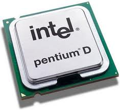
Arquitecturas Risc
Arquitectura computacional, RISC (Reduced Instruction Set Computer) es un tipo de microprocesador
con las siguientes características fundamentales: Instrucciones de tamaño fijo y presentado en un
reducido número de formatos. Sólo las instrucciones de carga y almacenamiento acceden a la memoria
de datos. El objetivo de diseñar máquinas con esta arquitectura es posibilitar la segmentación y el
paralelismo en la ejecución de instrucciones y reducir los accesos a memoria. Las máquinas RISC
protagonizan la tendencia actual de construcción de microprocesadores.
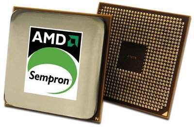
1.2.1.1 Unidad Central de Procesamiento
Se la suele llamar coloquialmente como microprocesador o simplemente procesador, y puedes considerarla como el cerebro de cualquier dispositivo. Se encarga de procesar todas las instrucciones del dispositivo, leyendo las órdenes y requisitos del sistema operativo, así como las instrucciones de cada uno de los componentes y las aplicaciones. CPU es la que se encarga de que todo funcione correctamente, y de interpretar todo lo que quiere hacer el sistema operativo o los componentes, estableciendo las conexiones y realizando todos los cálculos precisos para que funcione. Cuanto más potente sea el procesador, más rápido podrá hacer las operaciones y más rápido funcionará tu dispositivo en general. Los CPUs modernos se pueden clasificar por sus características como: Tamaño de la Unidad Aritmética Lógica (ALU). Bus de conexión al exterior (8, 16, 32, 64 bits). Si su arquitectura tiene cauce (pipeline). Si son de arquitectura CISC o RISC.
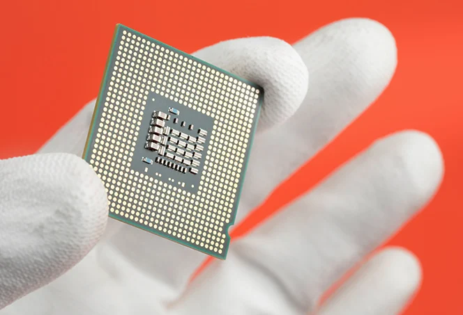
Si son Von Newmann o Harvard. S manejan instrucciones enteras o implementan también instrucciones de punto flotante. No hace mucho tiempo, el procesador era algo totalmente desconocido por los usuarios de PCs. Esto fue cambiando con el tiempo y en la actualidad cualquier persona al comprar un equipo se pregunta acerca de los atributos elementales de este dispositivo. Es que el procesador es una parte esencial de la computadora, por eso generalmente se la conoce como su “cerebro”.
1.2.1.2 Unidad Aritmética Lógicao
Es un circuito lógico digital que realiza operaciones aritméticas y lógicas entres los datos de un circuito: suma resta, división y multiplicación, así como establece comparaciones lógicas a través de los condicionales lógicos "si", "no", y "o". Todos los microprocesadores incluyen al menos una ALU, que varía su poder y complejidad según su finalidad, Además, la ALU cuenta con una serie de registros para almacenar los datos y bits de información sobre los resultados. Operaciones por realizar por la ALU:
- Suma aritmética
- Resta aritmética
- Transferencia
- operaciones lógicas
- Desplazamiento o rotación
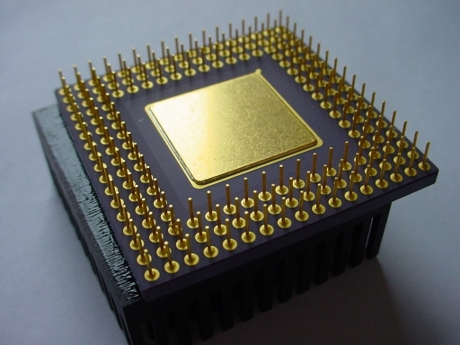
El circuito ALU es solo un operador, no puede tomar decisiones. Las entradas deben contener tanto la magnitud como el signo que corresponda a la operacion. La ALU deberá contar con un circuito de control que le permita: Identificar la operación a realizar Administrar los recursos internos , generar las banderas.
1.2.1.3 Registros
Los registros que encuentran dentro de cada procesador su función principales
almacenar los valores de cada uno de los datos,comandos,instrucciones o estados binarios que son los
que ordenan qué dato debe procesarse, así como la forma en la que se debe realizar. Un registro no
deja de ser una memoria de velocidad alta y con poca capacidad. Cada registro puede contener una
instrucción, una dirección de almacenamiento o cualquier tipo de dato. Cada procesador tiene varias
asignaciones o tareas que debe de realizar para el manejo de la información
La información es recibida generalmente en código binario, procedente de las aplicaciones para,
después, procesarlos de una forma determinada.
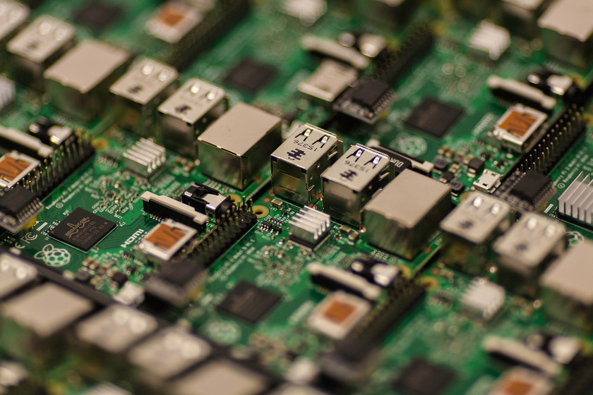
Tipos de registros
Los registros del procesador se dividen o clasifican atendiendo al propósito que sirven o a las
instrucciones que les ordenan.
Registros de datos: Guardan valores de datos numéricos, como son los caracteres o pequeñas órdenes.
Los procesadores antiguos tenían un registro especial de datos: el acumulador, el cual era usado
para operaciones determinadas.
Registros de datos de memoria (MDR): Es un registro que se encuentra en el procesador y que está
conectado al bus de datos. Tiene poca capacidad y una velocidad alta por la que escribe o lee los
datos del bus que van dirigidos a la memoria o al puerto E/S, es decir, un periférico.
Registros de direcciones: Guardan direcciones que son usadas para acceder a la memoria principal o
primaria, que solemos conocer como ROM o RAM. En este sentido, podemos ver procesadores con
registros que se usan solo para guardar direcciones o valores numéricos.
Registros de propósito general (GPRs): Son registros que sirven para almacenar direcciones o datos
generales. Se trata de una especie de registros mixtos que, como su propio indica, no tienen una
función específica.
Registros de propósito específico (SPRs): En esta ocasión, estamos ante registros que guardan datos
del estado del sistema, como puede ser el registro de estado o el instruction pointer.
Registros de estado: Sirven para guardar valores reales cuya función es determinar cuándo una
instrucción debe ejecutarse o no.
Registros constantes: Su cometido es guardar valores de sólo lectura como son el 0, 1 ó π.
1.2.1.4 Buses
Un bus en informática es un conjunto de cables o pistas eléctricas que se utiliza para transportar datos entre los diversos componentes de un sistema informático, como la CPU, la memoria RAM, los dispositivos de almacenamiento y los dispositivos de entrada y salida1. Existen varios tipos de buses, y aquí te presento algunos de ellos:
- Bus Paralelo:
- En este tipo de bus, los datos se envían por bytes al mismo tiempo utilizando varias líneas con funciones fijas.
- Se ha utilizado intensivamente en computadoras, desde el bus del procesador hasta las impresoras.
- La cantidad de datos enviada es grande, con una frecuencia moderada, igual al ancho de los datos por la frecuencia de funcionamiento.
- Bus Serie:
- En el bus serie, los datos se envían bit a bit y se reconstruyen mediante registros o rutinas de software.
- Está formado por pocos conductores y su ancho de banda depende de la frecuencia.
- Se utiliza en buses para discos duros, tarjetas de expansión y el bus del procesador.
- Buses del Procesador:
- Bus de Direcciones
- Es unidireccional, fluyendo la información en un solo sentido, del CPU a la memoria o a los elementos de entrada y salida.
- El CPU puede generar 2^n posibles direcciones diferentes mediante niveles lógicos en las líneas de dirección.
- Bus de Datos:
- Es bidireccional, permitiendo que los datos fluyan hacia o desde el CPU.
- Las palabras de datos transmitidas tienen m bits de longitud, determinando la clasificación del procesador.
- Bus de Control:
- Se utiliza para sincronizar actividades y transacciones con los periféricos del sistema.
- Algunas señales, como Lectura o Escritura R/W, indican el tipo de operación esperada por el CPU.
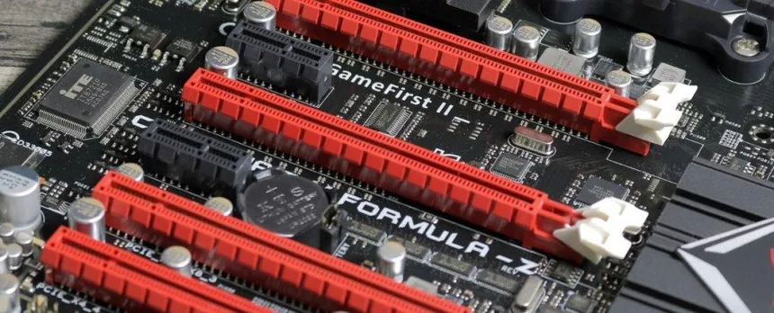
1.2.2 Memoria
Es un dispositivo que puede mantenerse en por lo menos dos estados estables por un cierto periodo de tiempo. Cada uno de estos estados estables puede utilizarse para representar un bit. A un dispositivo con la capacidad de almacenar por lo menos un bit se le conoce como celda básica de memoria. Un dispositivo de memoria completo se forma con varias celdas básicas y los circuitos asociados para poder leer y escribir dichas celdas básicas, agrupadas como localidades de memoria que permitan almacenar un grupo de N bits.
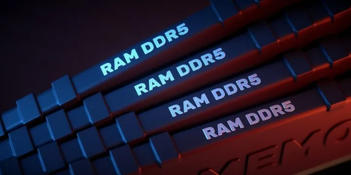
1.2.2.1 Conceptos básicos del manejo de la memoria
La gestión de memoria en un dispositivo informático implica asignar y administrar la memoria para los programas que la requieren. Es crucial para el funcionamiento eficiente de una computadora. Los sistemas de memoria virtual separan las direcciones de memoria utilizadas por los procesos de las direcciones físicas reales, lo que aumenta la cantidad efectiva de memoria disponible mediante la paginación. La calidad de la gestión de memoria afecta directamente el rendimiento del sistema. Para cargar programas en la memoria, existen dos técnicas: partición fija, que divide la memoria libre en partes de igual o diferente tamaño, y partición dinámica, que ajusta el tamaño de las particiones según las necesidades de cada proceso.
1.2.2.2 Memoria Principal
La memoria principal, también conocida como memoria RAM (Random Access Memory),
es un componente esencial en las computadoras. Aquí tienes una breve descripción:
Memoria RAM: La memoria RAM es una forma de almacenamiento temporal que permite a la computadora
acceder rápidamente a los datos necesarios para ejecutar programas y procesos. A diferencia del
almacenamiento en disco (como el disco duro o SSD), la RAM es volátil, lo que significa que se borra
cuando apagas la computadora. La RAM es fundamental para el rendimiento general de la máquina, ya
que afecta la velocidad de carga de aplicaciones y la multitarea.
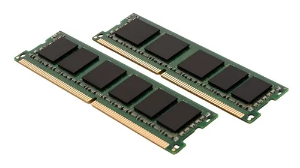
1.2.2.3 Memoria cache
Es la memoria de acceso rápido de una computadora, que guarda temporalmente las
últimas informaciones procesadas. La memoria caché es un búfer especial de memoria que poseen las
computadoras, que funciona de manera similar a la memoria principal, pero es de menor tamaño y de
acceso más rápido. Es usada por el procesador para reducir el tiempo de acceso a datos ubicados en
la memoria principal que se utilizan con más frecuencia. La caché es una memoria que se sitúa entre
la unidad central de procesamiento (CPU) y la memoria de acceso aleatorio (RAM) para acelerar el
intercambio de datos.
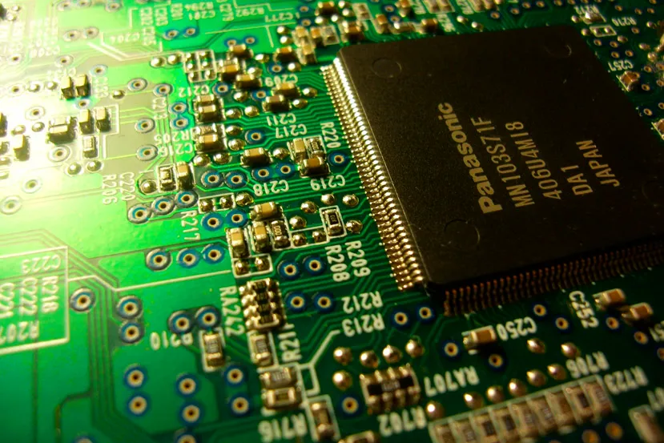
Cuando se accede por primera vez a un dato, se hace una copia en la caché; los accesos siguientes se
realizan a dicha copia, haciendo que sea menor el tiempo de acceso medio al dato. Cuando el
procesador necesita leer o escribir en una ubicación en memoria principal, primero verifica si una
copia de los datos está en la memoria caché; si es así, el procesador de inmediato lee o escribe en
la memoria caché, que es mucho más rápido que de la lectura o la escritura a la memoria principal.
La memoria caché cuenta con 3 niveles, cada uno teniendo más caché, pero siendo más lenta, siendo la
de nivel 3 la más lenta.
1.2.2.4 Módulos de entrada salida
Es la memoria de acceso rápido de una computadora, que guarda temporalmente las Para poder hacer una operación entre el procesador y un periférico, se necesita conectar estos dispositivos a la computadora y gestionar de manera correcta la transferencia de datos. Esto, se puede realizar mediante los sistemas de módulos de Entrada/Salida. Estos módulos están conectados con el procesador y la memoria principal, cada uno controla uno o más dispositivos externos.
1.2.3 Manejo de entrada/salida
El manejo de entrada/salida (E/S) se refiere a la comunicación entre una computadora y una entidad externa a su sistema. En este contexto, entrada se refiere al ingreso de información al sistema para su procesamiento, mientras que salida es la información procesada por el computador y comunicada al exterior. Los dispositivos que realizan operaciones de E/S son denominados periféricos, e incluyen aparatos como el teclado, el ratón, la pantalla del computador, la impresora y los dispositivos de red. La gestión de estos dispositivos es vital para la efectiva operación del sistema, especialmente cuando se intenta presentar una interfaz común entre otros y al mismo tiempo se tiene una multitud de periféricos distintos en forma y función.
1.2.3.1 Módulos de entrada/salida
Para poder hacer una operación entre el procesador y un periférico, se necesita
conectar estos dispositivos a la computadora y gestionar de manera correcta la transferencia de
datos. Esto, se puede realizar mediante los sistemas de módulos de Entrada/Salida. Estos módulos
están conectados con el procesador y la memoria principal, cada uno controla uno o más dispositivos
externos.
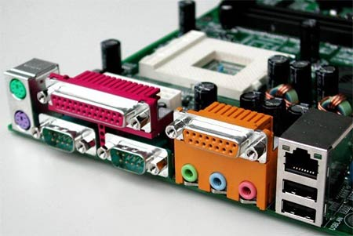
1.2.3.2 Entrada/Salida programada
La entrada-salida programada (también conocida como E/S programada o PIO) es un
método de transmisión de datos entre una unidad central de procesamiento (CPU) y un dispositivo
periférico, como un adaptador de red o un dispositivo de almacenamiento Parallel ATA (PATA), que
antes se conocía como AT Attachment (ATA). En este método, cada transferencia de datos se inicia
mediante una instrucción en el programa, lo que implica la participación de la CPU en cada
transacción.
En contraste, en las operaciones de acceso directo a memoria (DMA), la CPU no está involucrada en la
transferencia de datos. El término “entrada/salida programada” puede referirse a dos enfoques
específicos:
- 1. E/S mapeadas en memoria (MMIO): En este caso, las transferencias de E/S se realizan a dispositivos que están mapeados en el espacio de direcciones normal disponible para el programa. Es decir, se accede a estos dispositivos como si fueran parte de la memoria principal.
- 2. E/S mapeadas en puertos (PMIO): Aquí, las transferencias utilizan un espacio de direcciones especial fuera de la memoria normal. Generalmente, se accede a estos puertos mediante instrucciones dedicadas, como los comandos IN y OUT en arquitecturas x86.
El enfoque PMIO fue especialmente útil en los primeros microprocesadores con espacios de direcciones limitados, ya que permitía que los dispositivos de E/S no consumieran recursos valiosos de memoria."
1.2.3.3 Entrada/Salida mediante interrupciones
Esta técnica pretende evitar que el procesador pare o haga trabajo improductivo,
mientras que espera a que el periférico esté preparado para hacer una nueva operación. El hardware
de la computadora necesita tener un conjunto de líneas de control del bus del sistema y de petición
de interrupción. Funcionamiento: El procesador ejecuta instrucciones de un programa. Al finalizar
cada instrucción comprueba si se ha producido una interrupción. En caso afirmativo se salva el
estado actual del programa (contador del programa y registros) y se salta a ejecutar la rutina de
servicio correspondiente.
La rutina de servicio efectúa las operaciones apropiadas en la E/S para
realizar la transferencia de datos solicitada. Al finalizar la rutina de servicio se recupera el
estado de la CPU y se continúa ejecutando el programa que se estaba ejecutando antes de la
interrupción. Las interrupciones pueden ser: ENMASCARABLES (se pueden dejar de atender por software)
NO ENMASCARABLES (siempre atendidas) Dos formas de conocer la dirección/posición (vector) donde se
encuentra la rutina de servicio de la interrupción Vector de interrupciones siempre FIJO ó el
periférico suministra el vector de interrupción.
1.2.3.4 Acceso directo a memoria
El DMA (Acceso Directo a la Memoria) permite que el dispositivo de red
transfiera los datos de los paquetes directamente a la memoria del sistema, reduciendo así la carga
de la CPU. Sin embargo, debido a la frecuencia y los intervalos aleatorios en los que llegan los
paquetes, el sistema no puede entrar en un estado de energía más bajo de manera eficiente.
El coalescente DMA permite que la tarjeta de interfaz de red (NIC) recoja los paquetes antes de
iniciar un evento DMA. Aunque esto puede aumentar la latencia de la red, también incrementa las
posibilidades de que el sistema consuma menos energía. Los adaptadores y dispositivos de red basados
en el controlador Ethernet Intel® I350 (y controladores posteriores) admiten la fusión de DMA.
Los valores de coalescencia más altos en el DMA resultan en un mayor ahorro de energía, pero también
pueden aumentar la latencia de la red en su sistema. Si decides habilitar la coalescencia de DMA,
también debes configurar la tasa de moderación de interrupciones en “mínimo”. Esto minimiza el
impacto de la latencia causada por la coalescencia de DMA y mejora el rendimiento máximo de la red.
Recuerda que debes habilitar la coalescencia de DMA en todos los puertos activos del sistema. No
obtendrás ahorro de energía si solo lo habilitas en algunos de los puertos. Además, ten en cuenta
que las configuraciones de BIOS, plataformas y aplicaciones también afectarán el potencial de ahorro
energético.
1.2.3.5 Canales y procesadores de entrada/salida
EL canal de E/S es una extensión del bus del 8088. Este canal contiene un bus de datos bidireccinal de 8 bits, 20 líneas de dirección, 6 niveles de interrupción, líneas de control para las operaciones de lectura y escritura para la memoria y la E/S, líneas de control de 3 canales de DMA, y líneas de control para el tiempo de refresco de memoria. Los canales de E/S proporcionan una línea Ready para permitir operaciones con dispositivos de memoria o de E/S lentos. Cuando la línea no está activada por un dispositivo, el procesador genera ciclos de lectura y esritura a memoria que toman cuatro ciclos de 210 ns (esto es, 840 ns) por byte. Todos los ciclos de lectura y escritura a E/S generados por el procesador requieren de cinco ciclos de 210 ns de reloj (1.05 ms) por byte. Todas las transferencias DMA requieren de cinco ciclos de reloj para un ciclo de tiempo de 1.05 ms por byte. Los ciclos de reloj se presentan aproximadamente cada 15 m sec y requieren de cinco ciclos de reloj. Los dispositivos de E/S están direccionados utilizando un mapeo de E/S con el espacio de direccionamiento. El canal proporciona a las tarjetas de E/S 512 direcciones de dispositivos.
1.2.4 Buses
En arquitectura de computadores, el bus es un sistema digital que transfiere datos entre los componentes de una computadora. Está formado por cables o pistas en un circuito impreso, dispositivos como resistores y condensadores, además de circuitos integrados. Un bus es una trayectoria por la cual viajan los datos en una computadora para comunicar los distintos dispositivos entre sí. Los principales buses que se encuentran dentro de una PC son: los Buses del micro-procesador, los Buses de memoria y los Buses del sistema.
1.2.4.1 Tipos de Buses
Existen dos tipos de transferencia en los buses:
-
Serie:
El bus solamente es capaz de transferir los datos bit a bit. El bus tiene un único cable que transmite la información. -
Paralelo:
El bus permite transferir varios bits simultáneamente, por ejemplo 8 bits.
Aunque en primera instancia parece mucho más eficiente la transferencia en paralelo, esta presenta inconvenientes: La frecuencia de reloj en el bus paralelo tiene que ser más reducida. La longitud de los cables que forman el bus está limitada por las posibles interferencias, el ruido y los retardos en la señal. Además, los modernos buses serie están formados por varios canales: En este caso se transmite por varios buses serie simultáneamente. En los primeros computadores electrónicos, era muy habitual encontrar buses paralelos, quedando los buses serie dedicados para funciones de menor entidad y dispositivos lentos, como el teclado. La tendencia en los últimos años es reemplazar los buses paralelos por buses serie (que suelen ser multicanal). Estos son más difíciles de implementar, pero están dejando velocidades de transferencia más elevadas, además de permitir longitudes de cable mayores.
1.2.4.2 Estructura de los buses
Un bus es un medio compartido de comunicación constituido por un conjunto de líneas (conductores) que conecta las diferentes unidades de un computador. La principal función de un bus será, pues, servir de soporte para la realización de transferencias de información entre dichas unidades. La unidad que inicia y controla la transferencia se conoce como máster del bus para dicha transferencia, y la unidad sobre la que se realiza la transferencia se conoce como slave. Los papeles de máster y slave son dinámicos, de manera que una misma unidad puede realizar ambas funciones en transferencias diferentes. Por ejemplo, una unidad de DMA hace de slave en la inicialización que realiza el máster, la CPU, para una operación de E/S. Sin embargo, cuando comienza la operación, la unidad de DMA juega el papel de máster frente a la memoria, que en esta ocasión hace de slave. Para garantizar el acceso ordenado al bus, existe un sistema de arbitraje, centralizado o distribuido, que establece las prioridades cuando dos o más unidades pretenden acceder al mismo tiempo al bus, es decir, garantiza que en cada momento sólo exista un máster. Para establecer el tiempo de duración de las transferencias y que sea conocido tanto por el máster como por el slave, un bus debe disponer de los medios necesarios para la sincronización master-slave.
1.2.4.3 Jerarquías de buses
Los computadores modernos tienen por lo menos 4 buses diferentes (bus interno, bus del procesador, bus del caché, bus de memoria, bus local de E/S, bus estándar de E/S). Se les considera una jerarquía, porque cada bus se conecta al nivel superior a él dentro del computador, integrando así todas las partes del computador. Cada uno es generalmente más lento que el que se encuentra sobre él, siendo el bus del procesador el más rápido tratándose de que este es el dispositivo más rápido del computador. Para mejorar el rendimiento del bus, las jerarquías de buses fueron implementadas cada vez más.
1.2.5 Interrupciones
Una interrupción consiste en un mecanismo que le permite al hardware la invocación de una rutina
fuera del control del programa que está siendo ejecutado. Es una señal recibida por el procesador de
una computadora, que indica que debe «interrumpir» el curso de ejecución actual y pasar a ejecutar
código específico para tratar esta situación. Una interrupción es una suspensión temporal de la
ejecución de un proceso, para pasar a ejecutar una subrutina de servicio de interrupción, la cual,
por lo general, no forma parte del programa, sino que pertenece al sistema operativo o al BIOS.
Una vez finalizada dicha subrutina, se reanuda la ejecución del programa. Las interrupciones son
generadas por los dispositivos periféricos habilitando una señal del CPU (llamada IRQ del inglés
"interrupt request") para solicitar atención de este. Por ejemplo. cuando un disco duro completa una
lectura solicita atención al igual que cada vez que se presiona una tecla o se mueve el ratón. La
primera técnica que se empleó para esto fue el polling, que consistía en que el propio procesador se
encargara de sondear los dispositivos periféricos cada cierto tiempo para averiguar si tenía
pendiente alguna comunicación para él. Este método presentaba el inconveniente de ser muy
ineficiente, ya que el procesador consumía constantemente tiempo y recursos en realizar estas
instrucciones de sondeo.